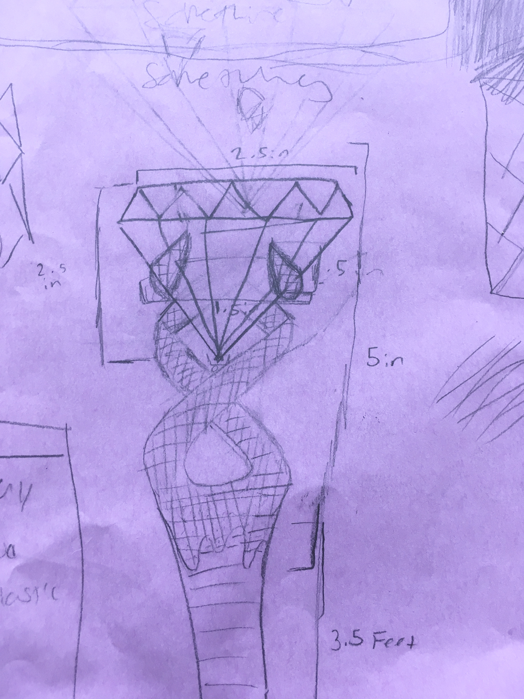
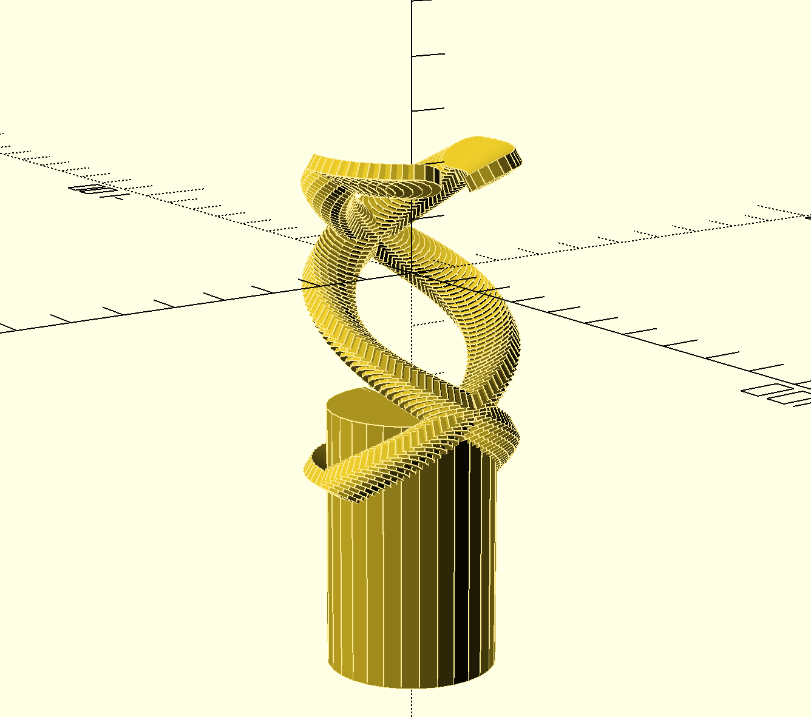
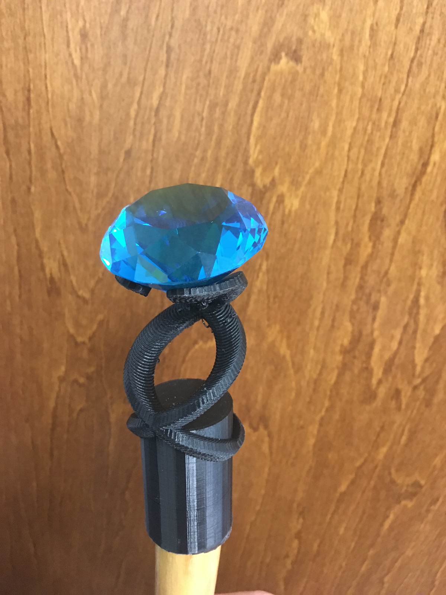

Magical Staff
Sun 15 March 2020 by Dr. Dirk Colbry
My eldest is a big Harry Potter Fan and made a few drawings of a Magical Staff they wanted to construct. I was really excited by the drawing. We purchased the crystal and staff online and sat down in front of OpenSCAD and came up with a fairly close design. Here is the OpenSCAD code:
difference(){
translate([0,0,-50]) cylinder(h = 50, r = 16, center = true);
translate([0,0,-103]) cylinder(h = 100, r = 13, center = true);
translate([0,0,-40]) cylinder(h = 26,r1=13,r2=0, center=true);
}
translate([0,0,-50]) for(z=[0:4:+350]) {
rotate([0,0,z]) translate([16,0,z/6+10]) rotate([0,-30,0]) cylinder(h=3, r=5);
rotate([0,0,-z+180]) translate([16,0,z/6+10]) rotate([0,-30,0]) cylinder(h=3, r=5);
}
translate([0,0,-40]) for(z=[-180:6:0]) {
rotate([0,0,z]) translate([16,0,0]) rotate([0,-30,0]) cylinder(h=3, r=5);
rotate([0,0,-z+180]) translate([16,0,0]) rotate([0,-30,0]) cylinder(h=3, r=5);
}
translate([0,0,-50]) for(z=[350:6:+420]) {
rotate([0,0,z]) translate([16,0,350/6+10]) rotate([0,-30,0]) cylinder(h=3, r=5);
rotate([0,0,-z+180]) translate([16,0,350/6+10]) rotate([0,-30,0]) cylinder(h=3, r=5);
}

The print came out well with minimal supports and we were happy with the design. The final project looked great.

To get everything to stick together we used Surgu Moldable glue. We were very happy with the final product.
JJRobots B-Robot
Tronxy X1 Cura Settings
Tronxy X1
Cylindrical Lithophans
Lithophans are one of my favorite things to 3D print. I have written software in MATLAB and python that can convert images to lithophans. Most years I design a lithophan and 3D printable frame to give away to family for Christmas and each year I like to try to do …
read moreSphere-O-Bot (JJRobots version)

Alexa Dot Holder

My brother got me an Alexa Dot for Christmas a few years ago. It turns out to be a lot of fun. We put it in the kitchen and the kids play music. My wife and I also use it to add things to our shopping list (very convenient!) Anyway …
read more3D printed Switch Guard

We recently moved into a new house and the kids are having fun running around turning on and off all the lights. Unfortunately, some of the light switches are not for lights. One goes to our garbage disposal, another goes to the gas fireplace and another turns off the furnace …
read moreFarmBot
Intrducing a 3D printer to my daughter's Kindergarten class

We had fun showing off my 3D printer to the Kindergarten class. Although the printer is fun to watch, kids tend to get board with it in just a few minutes. I like to come up with classroom projects that let the kids use things that are printed with the …
read more